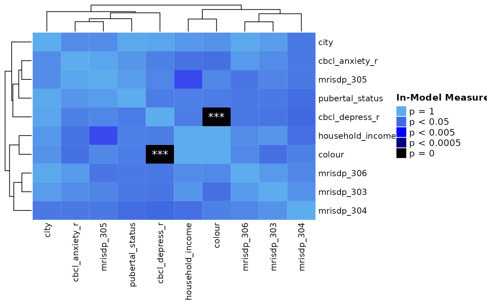
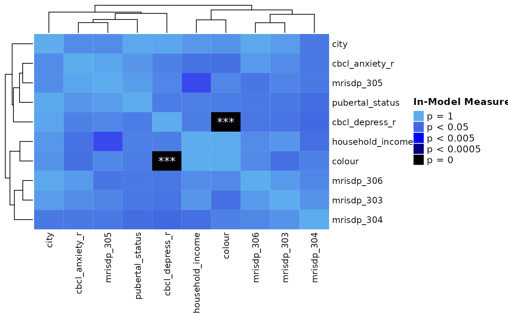
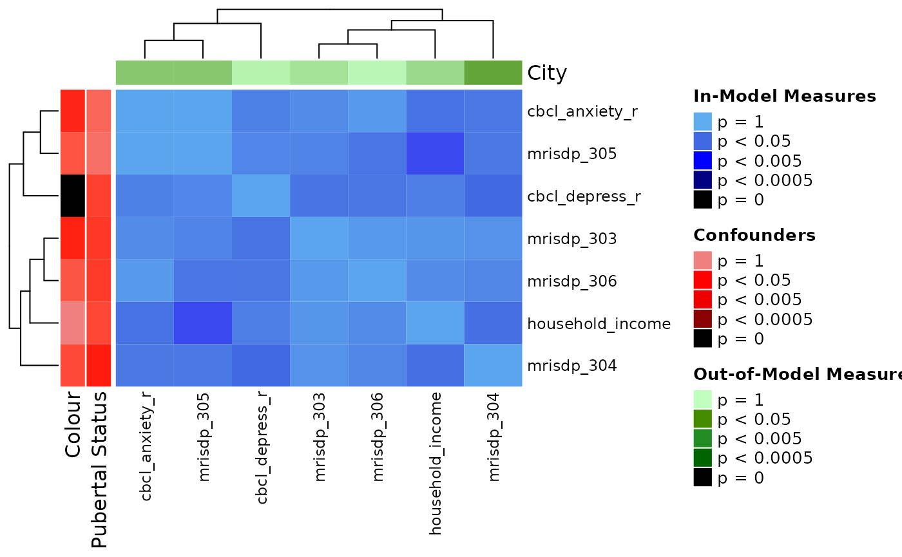
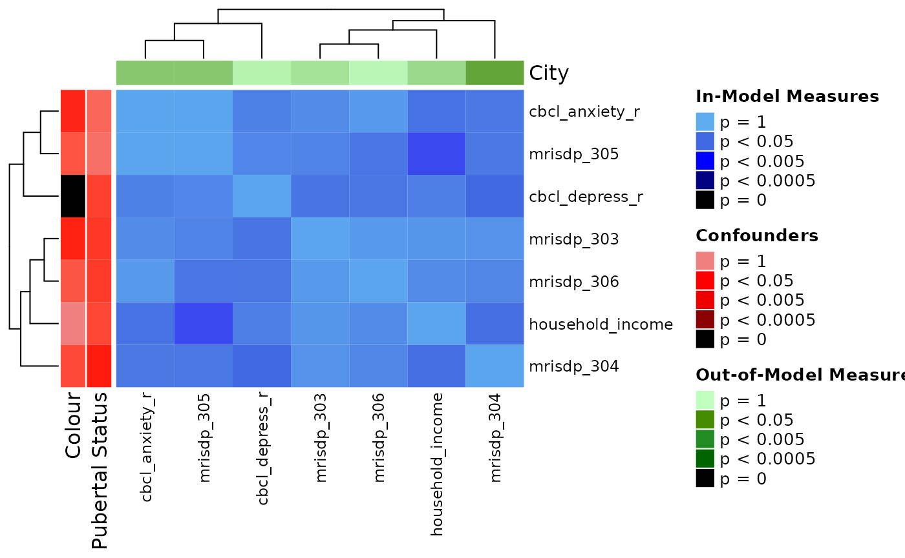
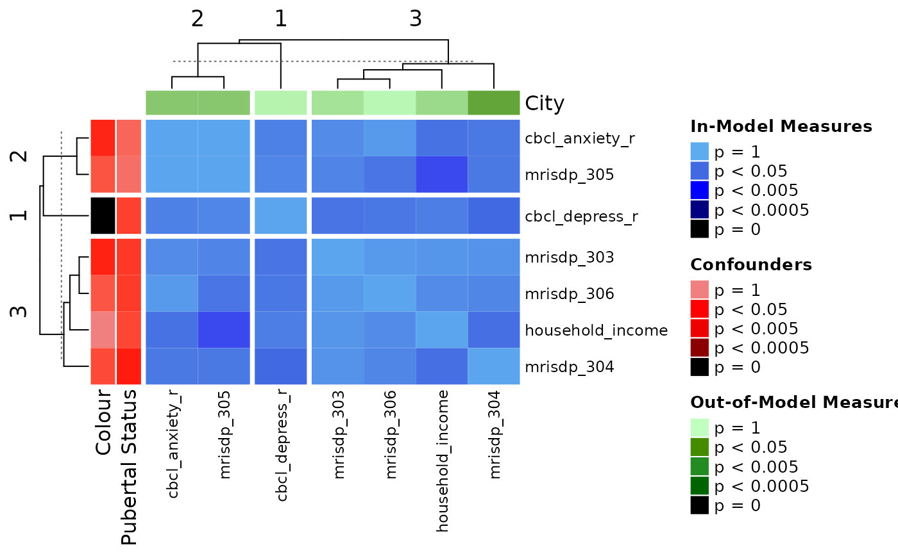
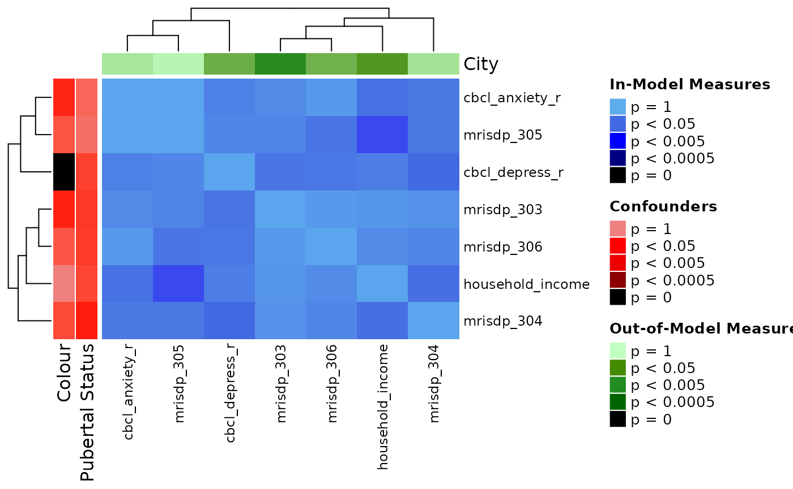
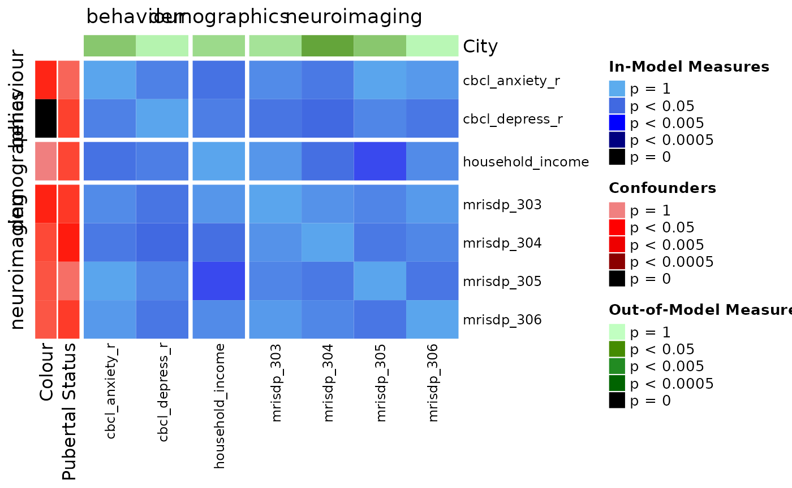

Correlation Plots
correlation_plots.RmdIn this vignette, we go through how you can visualize correlations across all the variables being used in your analyses.
Data set-up
library(metasnf)
# We'll just use the first few columns for this demo
abcd_cort_sa_minimal <- abcd_cort_sa[, 1:5]
# And one more mock categorical variable for demonstration purposes
abcd_city <- abcd_colour
abcd_city$"city" <- sample(
c("toronto", "montreal", "vancouver"),
size = nrow(abcd_city),
replace = TRUE
)
abcd_city <- abcd_city |> dplyr::select(-"colour")
# Make sure to throw in all the data you're interested in visualizing for this
# data_list, including out-of-model measures and confounding variables.
data_list <- generate_data_list(
list(abcd_cort_sa_minimal, "cortical_surface_area", "neuroimaging", "continuous"),
list(abcd_h_income, "household_income", "demographics", "ordinal"),
list(abcd_pubertal, "pubertal_status", "demographics", "continuous"),
list(abcd_colour, "favourite_colour", "demographics", "categorical"),
list(abcd_city, "city", "demographics", "categorical"),
list(abcd_anxiety, "anxiety", "behaviour", "ordinal"),
list(abcd_depress, "depressed", "behaviour", "ordinal"),
uid = "patient"
)
summarize_dl(data_list)## name type domain length width
## 1 cortical_surface_area continuous neuroimaging 93 5
## 2 household_income ordinal demographics 93 2
## 3 pubertal_status continuous demographics 93 2
## 4 favourite_colour categorical demographics 93 2
## 5 city categorical demographics 93 2
## 6 anxiety ordinal behaviour 93 2
## 7 depressed ordinal behaviour 93 2
# This matrix contains all the pairwise association p-values
associations_matrix <- calculate_associations(data_list)
associations_matrix[1:3, 1:3]## mrisdp_303 mrisdp_304 mrisdp_305
## mrisdp_303 0.0000000 0.6374024 0.4513919
## mrisdp_304 0.6374024 0.0000000 0.2790341
## mrisdp_305 0.4513919 0.2790341 0.0000000Heatmaps
Here’s what a basic heatmap looks like:
correlation_pval_heatmap(
associations_matrix
)##
## mrisdp_303
## mrisdp_304
## mrisdp_305
## mrisdp_306
## household_income
## pubertal_status
## colour
## city
## cbcl_anxiety_r
## cbcl_depress_r
##
## mrisdp_303
## mrisdp_304
## mrisdp_305
## mrisdp_306
## household_income
## pubertal_status
## colour
## city
## cbcl_anxiety_r
## cbcl_depress_r 

Most of this data was generated randomly, but the “colour” variable is really just a categorical mapping of “cbcl_depress”. The heatmap seems to show that quite well!
You can draw attention to confounding variables and/or any out of model measures by specifying their names as shown below.
correlation_pval_heatmap(
associations_matrix,
confounders = list(
"Colour" = "colour",
"Pubertal Status" = "pubertal_status"
),
out_of_models = list(
"City" = "city"
)
)## pubertal_status colour
## mrisdp_303 0.2632165 1.377306e-01
## mrisdp_304 0.1125757 3.930293e-01
## mrisdp_305 0.7851721 4.933408e-01
## mrisdp_306 0.2801596 5.106181e-01
## household_income 0.3696779 9.933317e-01
## cbcl_anxiety_r 0.6757400 1.533850e-01
## cbcl_depress_r 0.3250440 6.419098e-25
## pubertal_status colour city
## mrisdp_303 0.2632165 1.377306e-01 0.7803711
## mrisdp_304 0.1125757 3.930293e-01 0.2714719
## mrisdp_305 0.7851721 4.933408e-01 0.5537139
## mrisdp_306 0.2801596 5.106181e-01 0.9385818
## household_income 0.3696779 9.933317e-01 0.7091625
## cbcl_anxiety_r 0.6757400 1.533850e-01 0.5529767
## cbcl_depress_r 0.3250440 6.419098e-25 0.9063027 

The ComplexHeatmap package offers functionality for splitting heatmaps into slices. One way to do the slices is by clustering the heatmap with k-means:
correlation_pval_heatmap(
associations_matrix,
confounders = list(
"Colour" = "colour",
"Pubertal Status" = "pubertal_status"
),
out_of_models = list(
"City" = "city"
),
row_km = 3,
column_km = 3
)## pubertal_status colour
## mrisdp_303 0.2632165 1.377306e-01
## mrisdp_304 0.1125757 3.930293e-01
## mrisdp_305 0.7851721 4.933408e-01
## mrisdp_306 0.2801596 5.106181e-01
## household_income 0.3696779 9.933317e-01
## cbcl_anxiety_r 0.6757400 1.533850e-01
## cbcl_depress_r 0.3250440 6.419098e-25
## pubertal_status colour city
## mrisdp_303 0.2632165 1.377306e-01 0.7803711
## mrisdp_304 0.1125757 3.930293e-01 0.2714719
## mrisdp_305 0.7851721 4.933408e-01 0.5537139
## mrisdp_306 0.2801596 5.106181e-01 0.9385818
## household_income 0.3696779 9.933317e-01 0.7091625
## cbcl_anxiety_r 0.6757400 1.533850e-01 0.5529767
## cbcl_depress_r 0.3250440 6.419098e-25 0.9063027
Another way is to explicitly pass in a categorical vector that can be
used to distinguish the columns (according to their order in the
associations_matrix) into their desired slices. To use the domains of
the variables, you can make use of the dl_variable_summary
function.
dl_var_summary <- dl_variable_summary(data_list)
head(dl_var_summary)## name type domain
## 1 mrisdp_303 continuous neuroimaging
## 2 mrisdp_304 continuous neuroimaging
## 3 mrisdp_305 continuous neuroimaging
## 4 mrisdp_306 continuous neuroimaging
## 5 household_income ordinal demographics
## 6 pubertal_status continuous demographics
correlation_pval_heatmap(
associations_matrix,
confounders = list(
"Colour" = "colour",
"Pubertal Status" = "pubertal_status"
),
out_of_models = list(
"City" = "city"
),
split_by_domain = dl_var_summary
)## pubertal_status colour
## mrisdp_303 0.2632165 1.377306e-01
## mrisdp_304 0.1125757 3.930293e-01
## mrisdp_305 0.7851721 4.933408e-01
## mrisdp_306 0.2801596 5.106181e-01
## household_income 0.3696779 9.933317e-01
## cbcl_anxiety_r 0.6757400 1.533850e-01
## cbcl_depress_r 0.3250440 6.419098e-25
## pubertal_status colour city
## mrisdp_303 0.2632165 1.377306e-01 0.7803711
## mrisdp_304 0.1125757 3.930293e-01 0.2714719
## mrisdp_305 0.7851721 4.933408e-01 0.5537139
## mrisdp_306 0.2801596 5.106181e-01 0.9385818
## household_income 0.3696779 9.933317e-01 0.7091625
## cbcl_anxiety_r 0.6757400 1.533850e-01 0.5529767
## cbcl_depress_r 0.3250440 6.419098e-25 0.9063027